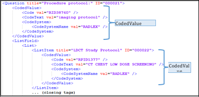
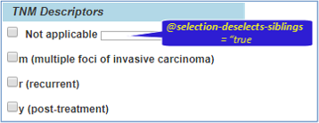
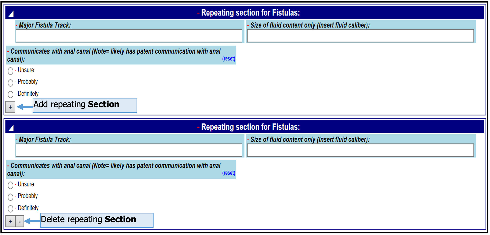

SDC Schema#
This chapter will describe different elements of the schema and how they can be used to represent forms. It will go into detail of elements in the SDC schema which are essential for any SDC Implementer to understand.
This section will describe a variety of form structure and XML Form Components (XFCs) that are used to represent form controls.
FormDesign#
The FDF root element (FormDesign or DemogFormDesign) has a relatively large number of attributes. Some of the attributes address static FDF metadata inserted by the FDF designer. These are related to the identity of the FDF, such as the ID or the filename.
DemogFormDesign is typically only used when there are multiple forms in an SDCPackage and the first form contains only demographic data. Otherwise for other forms, even if multiple inside an SDCPackage will use FormDesign to wrap the form.
Other attributes have values that are used to track form instance data used for tracking individual instances of forms that are instantiated for a specific purpose, e.g., entering data on a specific patient, during a specific encounter. Instance values are assigned by the Form Manager (FM), Form Filler (FF), and/or Form Receiver (FR).
For tracking purposes in some use cases, a Form Manager may assign some of instance identifiers before delivering an SDC form to the FF, and the FF must check for these pre-assigned instance-tracking values to avoid inappropriately overriding Form Manager-assigned values. In other cases, the instance tracking values are assigned by the FF, and included as part of the forms data set that is transmitted to the FR. If the FF detects that the Form has not assigned instance values to the instance attributes, then it may assign them itself. A FR should not alter the contents of a received FF form. However, a FR may log some or all of the instance attribute values in another data storage area, and may add its own logging information (e.g., time of receipt, hash value of XML contents, etc.), but these data should not be added to the FDF-R. In many cases, the FF is a “dumb” web page, and therefore performs none of the instance functions. In some cases, the FM and/or FF and/or FR may be part of the same institution, and this will help determine which actor(s) assign the instance values.
All instance attributes are optional in the XML, because they are not relevant in empty (not-instance) forms. Some static attributes are also optional. A FR should check for the correct assignment of all FormDesign attribute values as part of the validation process of a received form.
A third class of attributes are the instance status attributes. These are assigned by the FF based on information provided by the DEF user. The attributes address the type of changes in the DEF and finality of the submitted FDF-R.
FormDesign Attributes#
The following subsections describe the different attributes that may be present in the
Static Attributes:#
Values for these attributes are supplied by the form designer.
formTitle: Human readable title for display when choosing forms from list provided by a FM. TheformTitlemay be displayed at the top of the DEF.baseURI: This parameter is required in theFormDesignelement but is optional in the XFCs. It identifies the organization that is responsible for designing and maintaining the FDF or XFC. It’s best to avoid using prefixes like “Error! Hyperlink reference not valid.” or “Error! Hyperlink reference not valid.” because these can occasionally cause XML validation errors when used in a URI-typed field.basedOnURI: URI used to identify the SDC form that the current FDF is based upon. In most cases, this should be a standard SDC form that is modified and/or extended by the current FDF. It’s best to avoid using prefixes like “Error! Hyperlink reference not valid.” or “Error! Hyperlink reference not valid.” because these can occasionally cause XML validation errors when used in a URI-typed field.lineage: A string identifier that is used to group multiple versions of a single form. The lineage is constant for all versions of a single kind of form. When appended tobaseURI, it can be used to retrieve all versions of one particular form. Example: lineage=”Lung.Bmk.227”.version: A string that contains the version text for the current form. It is designed to be used in conjunction withbaseURIandlineage.ID: InFormDesign, the ID is used to uniquely identify an “empty” FDF (i.e., not an FDF-R, which contains user-entered data) from other FDF files that have different FDF content. Thus, aFormDesignID is shared by all FDFs that have the same lineage and version. To represent this concept, we create the ID with the following formula: ID=lineage_version_sdcFDF. In other words, we concatenate the components lineage, version, and the text “sdcFDF” using “_” characters as separators. The suffix “sdcFDF” indicates that we are working with the FDF variant, not the FDF-R or the DE variant of SDC XML. From Example 5: FormDesign attributes and Properties:ID=”Lung.Bmk.227_1.001.011.RC1_sdcFDF”, we can clearly see how lineage and version values and the text “sdcFDF” are concatenated with “_”.
filename: The filename of the FDF when is saved to a file storage device (e.g., a disk or USB drive). The filename appears inside the FDF XML to help ensure the identity of the FDF content in case the saved filename (on a disk drive, etc.) has been changed for any reason.For FDF files without responses, the filename, one suggested format is lineage_version_sdcFDF.xml.
For assigning a filename to FDF-R instance documents, the following filename format may be considered: lineage_version_instance_instanceVersion_sdcFDFR.xml.
instanceis a GUID that identified the all versions of an instance FDF-R document.instVeris a version of the instance FDF-R. However, this format can become rather long, and thus short GUIDs or other formats may be considered.
fullURI: The full URI that uniquely identifies the current form. It is created by building up a REST-style query string from several components:baseURI,lineage,version, anddoctype, using a format of component=value pairs, as in the following example:fullURI=”_baseURI=cap.org&_lineage=Lung.Bmk.227&_version=1.001.011.RC1&_docType=sdcFDF”.
Note that each bolded component name is preceded by an underscore “_” and most component names and values derive from a
FormDesignattribute. The onlyfullURIcomponent not present as an attribute inFormDesignisdocType, which is always set to “sdcFDF” for FDFs, and is set to “sdcFDFR” for FDF-R documents, which contain data. Note that all “&” (ampersand) symbols are escaped using the standard XML/HTML “&” escape notation.
prevVersionURI: This URI is used to identify the SDC form that is the immediate previous version of the current FDF. The format is the same asfullURI. The primary role of this optional attribute is to allow automated comparisons between a current FDF and the immediate previous FDF version. This is often helpful when deciding whether to adopt a newer version of an FDF.
Instance Attributes:#
These are attributes found in an FDF-R, which is created to contain user-entered data. Included in brackets “[ ]” are the IHE actor(s) that are responsible for adding the correct value to each attribute. Different use cases may redefine the requirements for each attribute.
formInstanceURI: Unique URI used to identify a unique instance of an FDF that contains user responses. It is used for tracking form responses across time and across multiple episodes of editing by end-users. This instance identifier does not change for each edit session of a form instance. The formInstanceURI is formatted similarly to the fullURI but includes an additional parameter: _instance= {some GUID}. A GUID (e.g., a1b2c3d4…) should be used to create the unique instance part of the URI. An example is:
<FormDesign formInstanceURI="_baseURI=cap.org&_lineage=Lung.Bmk.227&_version=1.001.011.RC1&_docType=sdcFDF&_instance=Abc1dee2fg987"/>
formInstanceVersionURI: Globally-unique URI used to identify a unique edit session of a form’s saved responses. It is used for tracking form responses across time and across multiple episodes of editing by end-users. This identifier must change for each edit/save session of a form instance (defined by formInstanceURI).
The formInstanceVersionURI should be formatted similarly to the formInstanceVersionURI but must include an instance version identifier (_instVer) in the URI: _instVer={some version}. A suggested approach for the version information is the use of the release date/time for the new version, in W3C datetime format. In general, all transmitted versions should be archived by the FR or other storage system(s). It is also possible to create the URI from _instance and _instVer parameters alone, as long as the URI is able to uniquely identify and retrieve the instance and version of the globally unique FDF-R that was transmitted. An example is:
<FormDesign formInstanceVersionURI="_baseURI=cap.org&_lineage=Lung.Bmk.227&_version=1.001.011.RC1&_docType=sdcFDF&_instance=Abc1dee2fg987&_instVer=2019-07-16T19:20:30+01:00” />
formPreviousInstanceVersionURI: Unique URI used to identify the immediate previous instance of a form that contains responses. The formInstanceVersionURI of the previous instance is copied into formPreviousInstanceVersionURI for the current editing session, and the formInstanceVersionURI receives a new version suffix before the form is saved/transmitted. This attribute is used for tracking responses from a single form instance across time and across multiple episodes of editing by end-users. The formInstanceVersionURI value must change for each edit session of a form instance.
Instance Status Attributes#
The following instance attributes are generally assigned by the FF, based on input from the DEF user:
approvalStatus: Describes report fitness for clinical or other action:inProcess: currently being edited, users should not rely on results
preliminary: report is awaiting final review and approval
approved: report is fit for clinical or other action, often synonymous with final
cancelled: report/procedure has been aborted before issued
retracted: report has been deemed unfit for clinical or other action
completionStatus: The extent to which a report contains all of the requested information:pending: no information is yet available
incomplete: some requested information is not yet available
complete: all information is available in the requested report
newData: Identifies existence of data that is new to the current instance of package, form, section, or question compared to the previous instance of the package, form, section, or question. Values: True/FalsechangedData: Identifies existence of data that has been changed in the current instance of package/form/section/question compared to the previous instance of the package/form/section/question. Values: True/False
Below is an exhaustive FormDesign example. All required attributes are marked with required in the example below with comments on the groupings of attributes.
Note: The XML comments inside of the
<FormDesign
<!--Namespaces-->
xmlns="urn:ihe:qrph:sdc:2016" <!--required-->
xmlns:xsd="http://www.w3.org/2001/XMLSchema"
xmlns:xsi="http://www.w3.org/2001/XMLSchema-instance"
xmlns:h=http://www.w3.org/1999/xhtml
<!--Schema-based validation-->
xsi:schemaLocation="urn:ihe:qrph:sdc:2016 file:SDCFormDesign.xsd"
<!--generic BaseType attributes-->
order="0"
type=""
styleClass=""
name="Lung.Bmk.227"
<!--identifier-related attributes-->
baseURI="cap.org" <!--required-->
lineage="Lung.Bmk.227" <!--required-->
version="1.001.011.RC1" <!--required-->
ID="Lung.Bmk.227_1.001.011.RC1_sdcFDF" <!--required-->
fullURI=
"_baseURI=cap.org&_lineage=Lung.Bmk.227&_version=1.001.011.RC1&_docType=sdcFDF" <!--required-->
prevVersionID=
"_baseURI=cap.org&_lineage=Lung.Bmk.227&_version=1.000.001.REL&_docType=sdcFDF"
<!--miscellaneous helper attributes-->
filename="Lung.Bmk.227_1.001.011.RC1_sdcFDF.xml"
basedOnURI=""
formTitle="Lung Biomarker Reporting Template"
<!--data-submission identifiers-->
formInstanceURI=""
formInstanceVersionURI=""
formPreviousInstanceVersionURI=""
> <!--End of opening FormDesign element tag-->
<!--FormDesign Property elements-->
<Property name="Copyright" type="CAPeCP_static_text" styleClass="copyright" order="1"
propName="Copyright"
val="(c) 2018 College of American Pathologists. License required for use."/>
<Property name="ApprovalStatus" type="CAPeCP_meta" order="13" propName="ApprovalStatus"
val="RC1"/>
<!--Main section of form starts here-->
<Body name="Body" order="14" ID="Lung.Bmk.227_1.001.011.RC1_sdcFDF_Body"/>
</FormDesign>
SDC Type Hiearchy#
SDC elements all have types associated with them. FormDesign is an example of a base type. The sections below will describe subtypes.
Abstract Types have…

BaseType:CodeMatchType:CommentType:ExtensionType:ExtensionBaseType: (EBT) requires a more detailed explaination below.PropertyTypeTemplateAdminType:ChildItemsType:LinkType,BlobType,ContactType:CodedValue,CodeSystemType:ListFieldType,ListType,LookUpendpointType:ReponseFieldType,ListItemFieldType:IdentifiedExtensionType:DataElementType:FormDesignType:InjectFormType:DisplayedType:ButtonItemType:ListItemType:RepeatingType:SectionType:QuestionType:
ExtensionBaseType (EBT)#
The ExtensionBaseType (EBT) is an abstract type that confers on descendants the ability to add custom Extension, Comment and Property elements. Most SDC Types inherit from ExtensionBaseType, with the notable exceptions of CommentType, ExtensionType, all SDC datatypes, and some direct derivatives of datatypes.
Extension#
The Extension element provides a place to insert XML that is not defined in the SDC Schema. The Extension element is defined by ExtensionType, which inherits from BaseType. The sub-elements of Extension must provide a namespace (and ideally an XML Schema) for any non-SDC elements and attributes that are introduced. The Extension element provides almost infinite expansion flexibility for SDC. However, it also requires that form designers and implementers agree on the supported extensions, agree on which elements and contexts they may be used, document this usage, and create an extension validation mechanism to enforce correct usage and detect incorrect usage.
Comment#
The EBT also includes the ability to add optional Comment elements. The Comment element is defined by the CommentType, which inherits from BaseType. Comments may be provided by the FDF designer, the FDF implementation code, or by the DEF user. The type and styling of the Comment (if present) can be customized with the type and styleClass attributes. The comments are simple ASCII text and may not include rich text or substructures. The Comment content is placed in the val attribute of the Comment element.
Examples of comments created by an FDF designer are comments for the implementor. Comments from the DEF user might concern their response to a QR or the selection of a ListItem. If DEF users are allowed to add Comment elements, then the FDF implementation must include visual clues (e.g., a comment icon) in the DEF so that the user can add comments at appropriate points (e.g., on each Question and ListItem).
Property#
Property elements are based on PropertyType. PropertyType, which is a component of EBT, also derives recursively from EBT. Thus, a Property element may have any number of direct Comment, Extension, and Property descendants, and Property elements may thus be nested to any desired degree. Property elements may occur as children of all XFCs and most other FDF elements.
Properties may be used to define standard or custom FDF metadata. They also may be used to record visible or hidden metadata for any purpose. Property elements, when used on a DI or descendants of DisplayedType, can be used for many kinds of tasks including:
Display static information on forms
Display context-sensitive information (e.g., tooltips, status bar text, help pop-ups, or special text designed for report output). (The
Linkelement may also be used to provide help resources)Provide rich title text (i.e., in HTML format) for implementations that support rich text
Provide alternative language text
Provide ancillary, alternate, instructional or informational text for
DisplayedTypedescendants
In most cases, Property-derived text is displayed only under certain conditions (e.g., for rendering tooltips or report output). Determining if/when a Property should be displayed on a DEF requires the interpretation of its propName, type, and styleClass attributes, as specified by an established user community. Examples of possible Property propName values include “helpText,” “tooltip,” “statusBarText,” etc., which are commonly supported concepts and control types in most DEF programming frameworks. The Property element is also commonly used to contain invisible form metadata, e.g., versioning, source references, alternate language text, etc. Examples include “alt-text,” “reportText,” “htmlTitle,” etc, which will be described later. Any SDC Property text may optionally be available as strongly-typed data (e.g., integer, string, etc.).
Property may have descendants of Property, Comment, and Extension. As shown in Example 12: Nested Properties, Properties may be nested to any depth and use any datatype for the Property’s value.
Properties will be called by their propName, so that if the propName value is “myPropName1,” the Property will be called the “myPropName1 Property.” A Property must have content in the propName attribute, unless it is using a strongly-typed value under the Property\TypedValue tag. Strongly-typed Property values are discussed next.
The example below shows nesting properties.
<DisplayedItem ID="DI1" title="?This is a Note">
<Property propName="myPropName1" val="This is property value 1">
<Property propName="myPropName1.1" val="This is property value 1.1">
<Property propName="myPropName1.1.1" val="This is property value 1.1.1"/>
</Property>
</Property>
<Property propName="myPropName2" val="This is property value 2">
<Property propName="myPropName2.1" val="This is property value 2.1">
<Property propName="myPropName2.1.1" val="This is property value 2.1.1"/>
</Property>
</Property>
</DisplayedItem>
FormDesign\Property Elements#
The Property element may be used in conjunction with the FormDesign element, as shown below:
<FormDesign
order="0" ID="Lung.Bmk.227_1.001.011.RC1_sdcFDF"
baseURI="cap.org"
fullURI=
"_baseURI=cap.org&_lineage=Lung.Bmk.227&_version=1.001.011.RC1&_docType=sdcFDF"
filename="Lung.Bmk.227_1.001.011.RC1_sdcFDF.xml" lineage="Lung.Bmk.227"
formTitle="Lung Biomarker Reporting Template" version="1.001.011.RC1"
xmlns="urn:ihe:qrph:sdc:2016"
<Property name="Copyright" type="CAPeCC_static_text" styleClass="copyright" order="1"
propName="Copyright"
val="(c) 2018 College of American Pathologists. License required for use."/>
<Property name="ApprovalStatus" type="CAPeCC_meta" order="13" propName="ApprovalStatus"
val="RC1"/>
<Body name="Body" order="14" ID="Lung.Bmk.227_1.001.011.RC1_sdcFDF_Body"/>
</FormDesign>
Strongly-Typed Property Values for Special Purposes#
Sometimes, a Property needs to use a specific datatype, and this datatype ideally should be validated in the SDC XML for the correct format required by that datatype. In these cases, we can use the TypedValue feature of the Property element.
In the SDC Schema, HTML and XML are regular datatypes, in addition to the standard W3C datatypes, such as string and integer. However, HTML in the SDC Schema means the strict XHTML , variant. SDC thus supports custom HTML and XML islands everywhere that Property and datatypes are supported in the FDF.
Example 14 shows a strongly typed Property used to include XHTML-formatted text at any point in any EBT-derived element. The term “strongly-typed” in this context means that we are using a well-known (and preferably well-documented) propName value, which in this example is “myHtmlProperty”. Note the inclusion of a required XHTML Schema xmlns namespace declaration and SchemaLocation in the first
Property with strongly-typed XHTML content. As noted above, the HTML datatype element is used for this purpose, but the validation is accomplished with an XHTML Schema, to make it produce only valid XML, and make it work with strict XML validation technologies.
The following example shows a TypedValue\HTML
<Property propName="myHtmlProperty" val="This is plain property text">
<TypedValue>
<HTML>
<div xmlns="http://www.w3.org/1999/xhtml" xsi:schemaLocation="http://www.w3.org/1999/xhtml xhtml.xsd">
This is the <b>XHTML</b> version of the property text.
</div>
</HTML>
</TypedValue>
</Property>
Strongly-typed Properties support all SDC datatypes. The next example shows a strongly-typed date Property, which enforces the proper date format. Note that val is not included in the Property element, only in the date element. This is because val can only be validated against the string datatype, whereas date validates using the W3C date datatype.
<Property propName="myDateProperty">
<TypedValue>
<date val="2019-01-01"/>
</TypedValue>
</Property>
The reportText Property#
The following example uses a Question XFC to introduce the reportText Property. We will cover the Question XFC in more detail later. Question text used for the DEF display is contained in the title attribute. In the default case, this Question title text should also appear in a report with no changes. In some cases, however, the report text should be different than the DEF text. In this latter case, the Question title is used for display to the DEF user, but the val content (“Gross Appearance:”) of the reportText Property is used for the report. This is common on CAP eCPs, where a differen question title is expected on the final report generated from the FDF-R.
The example below shows shows the reportText Property in a Question.
<Question ID="Q6" title="Describe the Tumor's Gross Appearance">
<Property propName="reportText" val="Gross Appearance:"/>
<ResponseField>
<Response>
<string val = "The tumor was of ovoid shape, fully encapsulated..."/>
</Response>
</ResponseField>
</Question>
Occasionally, we wish to delete the DEF title text entirely from the report. This is achieved by placing “{no text}” in the reportText Property as follows:
<Question ID="Q6" title="Describe the Tumor's Gross Appearance">
<Property propName="reportText" val="{no text}"/>
<ResponseField>
<Response>
<string val = "The tumor was of ovoid shape, fully encapsulated..."/>
</Response>
</ResponseField>
</Question>
The next example demonstrates how a Property can define text that appears in a report, but should not appear in a DEF. By default, DisplayedItem title text should not appear on a report, because it is usually designed to aid the DEF user in filling out the DEF. However, custom text is sometimes needed on a report, but is not needed (by default) on the DEF because it can clutter up the screen. This pattern is sometimes called a “report note.” Note that the title attribute could have been omitted from the XML entirely since it’s an optional attribute that contains no value (“”).
<DisplayedItem ID="DI2" title="">
<Property propName="reportText" val="Physician's Note: ..."/>
</DisplayedItem>
Other Property Types#
As described earlier, it is also possible to use a special Property (e.g., “titleHTML”) to specify rich text for the DEF and/or report. The example below shows Rich text using Property\TypedValue\HTML
<Question ID="Q6" title="Describe the Tumor's Gross Appearance">
<Property propName="titleHTML">
<TypedValue>
<HTML>
<div xmlns="http://www.w3.org/1999/xhtml"
xsi:schemaLocation="http://www.w3.org/1999/xhtml xhtml.xsd">
Describe the Tumor's <b>Gross Appearance</b> </div>
</HTML>
</TypedValue>
</Property>
<Property propName="reportText" val="Gross Appearance:"/>
<ResponseField>
<Response>
<string val="The tumor was of ovoid shape, fully encapsulated..."/>
</Response>
</ResponseField>
</Question>
The Response text can handle rich text from user-input in a similar fashion, but without using Property. For example, the Responsestring datatype could have used the HTML datatype instead of string, allowing the DEF user to enter rich HTML text into the DEF instead of unformatted text:
<Response>
<HTML>
<div xmlns="http://www.w3.org/1999/xhtml"
xsi:schemaLocation="http://www.w3.org/1999/xhtml xhtml.xsd">
<b>The tumor was of ovoid shape, fully encapsulated</b>
</div>
</HTML>
</Response>
Later, we will introduce the concept of “untitled Questions,” which are Questions that have no title attribute text, but the Question’s subject is easily inferred from the context. However, in some cases, a particular DEF implementation style may need to display alternative text for the question. For these situations, alternative title text is provided in the form of the altText Property.
Properties can be used for any similar custom purposes on any EBT element. The Property names (propName) and implementation details must be agreed upon by form designers and implementors so that implementation code. The following example shows Property using to show altText
<Question ID="Q7" title="">
<Property propName="altText" val="This is alternative Question text"/>
<!-- other Question XML elements omitted for brevity-->
</Question>
IdentifiedExtensionType (IET)#
The IdentifiedExtensionType (IET) adds two attributes to its parent Type, EBT. The two attributes allow the unique identification of XFCs in an FDF, and also allow unique identification of the FDF. The attributes are:
ID: The ubiquitous ID attribute is a unique URI identifier for XFC types inFormDesign, and for FormDesign itself. It is required, and its uniqueness is enforced by the SDC Schema. URI identifiers are very flexible since they may assume any legal XML URI format.baseURI: The baseURI is required only in the FormDesign element; it is optional on XFCs. It identifies the organization that is responsible for designing and maintaining the FDF or XFC. If an XFC does not derive from the same organization as the default baseURI (the FDFbaseURIwhich is defined in theFormDesignelement), then a new value for the baseURI is entered on the XFC element to override the default one, and the new baseURI is then inherited by all descendant XFCs unless overridden by a descendant XFC. In most cases, FDFs will contain only a single default baseURI on the FDF, and no baseURI on the XFCs.
Ideally, the baseURI + ID should combine to form a globally unique identifier, that uniquely identifies an item in a particular form lineage. The same baseURI and ID may be reused in derived or versioned forms, as long as the context stays the same, and any affected data elements remain unchanged in context and semantics.
DisplayedType#
DisplayedType has two functions: it defines the DisplayedItem XFC for representing visible areas on the screen, and also acts as a building block for the other visible XFCs (Section, Question, ListItem, ButtonAction). DisplayedType defines most of the essential functional underlying capabilities of XFC-based controls. These capabilities include support for LinkItem, BlobContent, CodedValue, and several fundamental Event and Guard types. LinkItems contain the address of internal (DEF-based) or external (network-based) resources for support display or functionality in a DEF. BlobContent contains inline Binary Large Objects of virtually any type, but primarily those defined as standard MIME types. Events are DEF user actions that are “captured” by the DEF to alter DEF behavior or functionality in some way. The standard events are Enter, Exit, OnEvent (designer-defined). OnEvent is a generic event that is defined by the form designer. An SDC Guard is a unit of coded functionality that is activated or “fired” by an Event somewhere else in the DEF. The two built-in Guards are ActivateIf and DeActivateIf. These Guards activate and deactivate visible XFC-derived DEF controls based on activity somewhere else in the DEF.
FDF Identifiers#
Each FDF has its own ID attribute in the FormDesign element, which uniquely identifies each “class” of FDF document. The word “class” is meant to convey that the lineage and version are identical for each FDF that shares an ID; The XML content is identical in FDFs that share an ID.
In addition, every XFC in an FDF contains an ID value, which must be unique within its FDF. However, ID values do not need to be globally unique. Therefore, the same ID values may be used in other forms, including: Forms with the same lineage and forms form a different source. Within a given organization, it is best to control the release of IDs, so that the same ID never appears in a different FDF lineage.
Most XFC IDs are not changed when an FDF from a given lineage is released with a new version. However, a new FDF version will force an ID change for the FormDesign element. Within a given lineage of FDFs, identical XFC ID values signal that the semantics and basic structure of the object remains unchanged across different versions. The criteria for changing IDs on versioned Q and LI items are discussed later in this document.
It is possible to create a system for globally unique ID values that would enable every FDF and every XFC in a form to be uniquely identified, e.g., by using GUIDs. However, the use and maintenance of long GUID ID values can sometimes cause difficulties and errors.
To enable the use of simpler, shorter ID values that are easier to use, the SDC Schema includes the baseURI attribute. The baseURI functions similarly to an XML namespace since it uniquely identifies the organization or group or even the current form. When the baseURI value is used in conjunction with the ID value, a composite globally-unique identifier (CGUI) is created for each XFC. For example, if the simple ID value is “100”, and the baseURI is “www.cap.org/FormsDomainSDC1/”, then the CGUI is “www.cap.org/FormsDomainSDC1/100”, which the issuing organization (cap.org) should guarantee as unique within an FDF lineage. The CGUI is generated as needed and thus is not found explicitly in the FDF XML. Note that the ID value “100” need not be globally unique, but the CGUI should be globally unique.
The default XFC baseURI is defined as identical to the FormDesign baseURI. A new baseURI is not assigned to an XFC unless the FormDesign baseURI is not “appropriate” for a specific XFC and its descendant XFCs. An appropriate baseURI should reflect the organization that created and/or maintains the XFC content, as well as the FDF content domain that it addresses. The baseURI is inherited by all descendant XFCs and should not be added to the SDC XML unless there is a change in baseURI.
Ideally, the baseURI is assigned once at the highest level of an FDF (the FormDesign element). Every descendant ID then inherits the baseURI, without repeating the baseURI at each XFC. If necessary, multiple baseURIs may be used throughout an FDF; these override any higher-level URI assigned above it in the FDF hierarchy. Thus, an XFC uses the baseURI ancestor that is closest to it in the FDF hierarchy, starting with its own baseURI value (if it is present).
To create a baseURI, the institution that creates an SDC form should have one or more registered globally-unique IDs (e.g., domain names or GUIDs) that are used to uniquely identify the origin and uniqueness of its SDC forms. Ideally, these IDs should be in URL format, and should ideally represent real URLs that can be “dereferenced” to provide information about the organization and its forms. It’s best to avoid using prefixes like “http://” or “https://” in the baseURI text because these add unnecessary length and can occasionally cause XML validation errors when used in a URI-typed field such as formInstanceURI.
FormDesign Properties for CAP electronic Cancer Protocols (eCPs)#
Earlier, we introduced the concept of Property elements under the FormDesign tag. FDF Properties allow form designers to introduce domain-specific metadata into the FDF for a variety of purposes. Any of these Property elements may be displayed (or not) in the FDF, depending on the use case, and under the control of the FF software.
CAP Property types:
Copyright: A copyright statementGenericHeaderText: Text that appears at the top of the DEFCategory: The organ group that includes the current form, e.g., “Endocrine”OfficialName: The full human-readable name of the current formCAP_ProtocolName: The name of the CAP Cancer Protocol that contains the current formCAP_ProtocolShortName: The abbreviated name of the CAP Cancer Protocol that contains the current formCAP_ProtocolVersion: The version of the CAP ProtocolTemplateID: A numeric identifier for the form lineage, appended to the lineage textRestrictions: Rules about when to use or not use this formCAP_Required: The value is “true” if the form is required for Commission on Cancer accreditationAccreditationDate: The data that this form must go into effect to satisfy the requirements of accreditation-related surveysWebPostingDate: The date the form was posted on the CAP websiteShortName: A concise name for the form, more manageable than the long OfficialName PropertyApprovalStatus: A short text flag that indicates how close the form is to an officially-approved release. Examples include CTP (Community Technology Preview), RC (Release Candidate), and REL (official Release for implementation)AJCC_Version: The version of the American Joint Committee on Cancer (AJCC) Staging Manual used in the FDF
Here are examples of the CAP eCP properties that may be present in
<Property name="Copyright" type="CAPeCP_static_text" styleClass="copyright"
propName="Copyright" val="(c) 2018 College of American Pathologists. All rights reserved. License required for use." />
<Property name="GenericHeaderText" type="CAPeCP_static_text" propName="GenericHeaderText" val="Surgical Pathology Cancer Case Summary (Checklist)" />
<Property name="Category" type="CAPeCP_meta" propName="Category" val="Endocrine" />
<Property name="OfficialName" type="CAPeCP_meta" propName="OfficialName" val="ADRENAL GLAND" />
<Property name="CAP_ProtocolName" type="CAPeCP_meta" propName="CAP_ProtocolName" val="Adrenal Gland" />
<Property name="CAP_ProtocolShortName" type="CAPeCP_meta" propName="CAP_ProtocolShortName" val="Adrenal" />
<Property name="CAP_ProtocolVersion" type="CAPeCP_meta" propName="CAP_ProtocolVersion" val="4.0.1.1" />
<Property name="TemplateID" type="CAPeCP_meta" propName="TemplateID" val="129.100004300" />
<Property name="Restrictions" type="CAPeCP_meta" propName="Restrictions" val="Please refer to the cancer protocol cover page (www.cap.org/cancerprotocols) for information about which tumor types and procedures can be reported using this template." />
<Property name="CAP_Required" type="CAPeCP_meta" propName="CAP_Required" val="true" />
<Property name="AccreditationDate" type="CAPeCP_meta dt.dateTime" propName="AccreditationDate" val="2/28/2018 12:00:00 AM" />
<Property name="WebPostingDate" type="CAPeCP_meta dt.dateTime" propName="WebPostingDate" val="6/30/2017 12:00:00 AM" />
<Property name="ShortName" type="CAPeCP_meta" propName="ShortName" val="Adrenal.Bx.Res" />
<Property name="ApprovalStatus" type="CAPeCP_meta" propName="ReleaseStatus" val="RC2" />
<Property name="AJCC_Version" type="CAPeCP_meta" propName="AJCC_Version" val="8th Edition" />
Sections#
A Section defines a grouping of Question and Answer Sets (QAS) that belong to a particular topic. For example, a Section may define a seciton of a form related to lymph nodes, and group all those questions together.
Section controls derive from FDF Section elements. They contain an ID and title and they subsume (wrap) a group of topically-related form controls. Sections can contain any number of sub-sections and other XFCs, except for ListItems. ListItems may appear in a Section but must be within a Question (QAS) structure.
The code snippet below shows a section with a name, order, ID and minCard attribute
<Section name="S_4257" order="19" ID="4257.100004300" minCard="0">
</Section>
ChildItems#
The ChildItems element in Example 4: Nesting with a ChildItems Element: Section, DisplayedItem, Question, and ListItem provides a hierarchical nesting wrapper for Section, Question, and ListItem; these elements can become parent elements. A parent element must use a ChildItems element to wrap child elements. The ChildItems wrapper element serves to separate element descendants from other parent-owned metadata elements (such as Property, Comment, and Event elements) that supplement the parent element. Section, Question, and ListItem may be nested to any depth.
Question does not use the ChildItems wrapper for containing ListItems. Instead, ListItems appear in a \Question\ListField\List\ListItem XML construct without a ChildItems wrapper. This exception exists because the ListField\List structure serves as a wrapper for all ListItems belonging to a Question element.
Any element, except for ListItem, may be nested under a ChildItems element. Thus, a child Section or Question or ListItem can also wrap one or more elements if they are contained in a ChildItems element.
The general rules for element nesting are:
The following elements may have descendant elements
Section,Question, andListItem. These element descendants are always wrapped inside aChildItemsparent wrapper.DisplayedItem,ButtonAction,InjectFormdo not support descendant elements. However,IFmay inject SDC XML that contains descendants (described later).
The following elements must have a direct
ChildItemsparent:Section,Question,DisplayedItem,ButtonAction,InjectForm.The only exceptions are the Header, Body, and Footer sections that exist under the FormDesign element.
ListItemis an exception to the other elements. AListItemalways appears in a\Question\ListField\List\ListItemconstruct.
@rmoldwin should we include ButtonAction and Inject form? Both sections in the
<Section ID="S1" title="I am a section" >
<ChildItems>
<!-- Section with a <ChildItems> tag containing all the content of that section including <DisplayedItems> and <Questions>
Note that the <Question> does not require a <ChildItems> to contain ListItems-->
<DisplayedItem ID="DI1" title="I am a note on the screen"/>
<Question ID="Q1" title="This is a question title">
<ListField>
<List>
<ListItem ID="LI1" title="ListItem.title.1"/>
<ListItem ID="LI2" title="ListItem.title.2"/>
<ListItem ID="LI3" title="ListItem.title.3"/>
</List>
</ListField>
</Question>
</ChildItems>
</Section>
DisplayedItem#
The DisplayedItem element is used to define visible text for display almost anywhere in a DEF. Each DisplayedItem has a unique ID, but, unlike Section and Question, a DisplayedItem cannot have descendants and cannot be repeated or subsumed inside a repeating Section, Question, or ListItem. Displayed text that requires the use of descendants must use the Section element instead. The formatting of any SDC element, such as DisplayedItem or Section, can be specified by the styleClass attribute.
As described above, DisplayedType, which provides the DisplayedItem (DI) definition, is the parent Schema Type of the XFC Types for S, Q, LI, and BA. Thus, S, Q, LI, and BA inherit all elements and attributes of DisplayedType. IF does not inherit from DisplayedType, as it relies on the display properties of the subsumed injected parts, which do inherit from DisplayedType.
The primary function of DI is to provide text in the DEF. Often this takes the form of “notes,” which are strings of text that may accompany QAS controls to provide explanatory information with background documentation. Although DEF notes usually derive from the DI XFC, they can also derive from other SDC objects such as Section titles and Property values. The DI (as well as all DisplayedType descendants) can additionally be used to display Links (e.g., to Internet resources), BlobContent (Binary Large Objects) of any MIME type, Contact information, and CodedValues.
A DisplayedItem has a unique ID and a title, but unlike Questions and Sections, cannot have ChildItems form components. DisplayedItems that must have XFC descendants should use the Section model.
Blob#
Blobs can handle any type of binary media, such as images, audio, video, and data streams of any specified format (such as a MIME type). The blob may contain any type of special media but must be base 64 encoded.
The generic XPath for Blobs is DisplayedItem/BlobContent. Blob children elements are Hash, BlobURI, and BinaryMediaBase64.
CodedValue#
The CodedValue element provides an alternate hidden metadata encoding a code, terminology, classification, keyword, or local value that may be necessary in certain use cases. It has the following children elements:
Code: A standard code, or a local value from a custom coding system, that can be used to consistently identify, or provide a standard value for, the coded item.CodeText: The human-readable text that accompanies the assigned code and represents the code’s precise meaning (semantics) or usage.CodeMatch: Degree of match between the mapped item and the assigned code. ItscodeMatchTypeattribute holds an entry from an enumerated list of match types as follows:Exact Code Match
Close Code Match
Code Broader Than Item
Code Narrower Than Item
Item Implements Data Element Exactly
Item Derived from Data Element
Item Related to Data Element
CodeMatchComment: Comment about the degree of match between the mapped item and the assigned code.CodeSystem: The parent element whose children define the system that creates and maintains the standards for the code map. Its child element isCodeSystemName.CodeSystemName: The name of the coding system, as recommended by the coding system curators, or as recommended by the agency that creates standards for the code map in use.
ReleaseDate: The day that the selected version of the coding system was released for general use by the coding system curators.Version: Version of the coding system; uses the version format defined by the coding system.OID: The ISO object identifier (OID) for the coding system, as found at the HL7 OID Registry: HL7 OID RegistryCodeSystemURI: Web resource that uniquely identifies the coding system.

Questions#
Each QAS in the FDF XML is an XFC that can be represented in the DEF by one or more controls (widgets) by the FF software. The controls capture user response data in the DEF. Each QAS XFC has an ID and other metadata. DEF controls are assigned the matching XFC ID to enable data from the DEF control to be captured into the XFC XML that shares its @ID. The behavior of the control is determined by the corresponding XFC metadata. There are 3 QAS types: Question-Response, Single-Select Question, and Multi-Select Question.
The primary visible text for all controls is found in the title attribute inside the <Question> element.
Question-Response#
The QR control represents a Question control with an adjacent area for capturing a response from the user. The QR XFC does not have an answer list (a List of ListItems).
A QR response may be validated by rules in the Response element, which determine if the inputs are in the proper format (e.g., as a text string or decimal, or rarely, following a pattern mask or a binary type).
Observe the following points about this sample:
Question is the only XFC that appears in this XML example. The other nested elements support the Question XFC with additional metadata.
All XFC elements (Question in this case) must have an ID that is unique within the FDF. This uniqueness is enforced by the XML Schema. Uniqueness of IDs must be confirmed by SDC-compliant software. Since XFCs can be repeated in DEF implementation, uniqueness enforcement is an important task in SDC software implementations.
The text to display in the DEF is in the title content.
Responses are captured in a
ResponseField / Response / (datatype)structure, where(datatype)is an SDC element corresponding to one of the SDC datatypes.Responses must contain an SDC datatype element (string in this case).
User-entered responses are captured in the
valattribute of the(datatype)element, like this:<string maxLength="4000" minLength="0" val="This is my comment" />
The example below offers a complete example of a
<Question>element.
<Question ID="40273.100004300" title="Comment(s)">
<ResponseField>
<Response>
<string maxLength="4000" minLength="0"/>
</Response>
</ResponseField>
</Question>
Repsponse Field#
As mentioned in the Question-Response section, the response field is designed to take user input of some kind with the as specified datatypes. SDC supports W3C datatypes and also supports XML and HTML datatypes for user responses. Example datatypes can include strings, integers, decimals, and dates.
All
datatypeelements names use lower camel case, unlike all other elements in the SDC Schema. This is done to conform with the W3C representation of the datatypes in XML Schema documents. One notable exception because of it’s importance is@IDAll datatypes are defined and modeled after the W3C datatypes and include all of the W3C datatype metadata attributes.
All metadata attributes have a type appropriate for the element and the metadata. For example,
maxLengthhas an XML Schema datatype ofxs:long.The
valattribute validates the datatype of its element tag. Entering an invalid datatype in this attribute will generate a validation error when validated with the SDCFormDesign Schema.valcannot be Schema-validated against the element’s other datatype metadata (forstring, in this case,maxLength,minLength,mask,pattern), so that further validation ofvalcontent must use additional methods such as Schematron.
Here is another example that shows how numeric QR structures may appear with:
<Question ID="QR1" title="Specify Percentage of QR quarks (see Note A)">
<ResponseField>
<Response>
<integer maxInclusive="100" minInclusive="1"/>
</Response>
<TextAfterResponse val="%"/>
<ResponseUnits val="%" unitSystem="UCUM"/>
</ResponseField>
</Question>
The example above uses an <integer> datatype to specify and record the user-entered value.
Capturing User Responses in Questions#
A response may be captured in a @val attribute within the <Response> element’s datatype child element.
When the user enters a response into the DEF, the
<integer>element will be populated withvaland look like this:
<integer maxInclusive="100" minInclusive="1" val="My user response"/>
The displayed datatype validation metadata are specific for the
integerdatatype (maxInclusive,minInclusive).Other attributes are available for numeric response datatypes, including:
quantEnum,maxExclusive,minExclusive,totalDigits,mask,allowGT,allowGTE,allowLT,allowLTE, andallowAPPROX. For decimals and float,fractionDigitsis also available.The
TextAfterResponseelement provides a place to specify static text that should appear after the user’s response in the DEF and the report. Thevalcontent holds the text for display.The
ResponseUnitselement provides a place to record the units relevant to the response. Thevalattribute holds the text (“%”) of the units for the user’s response. This is provided by the FDF designer, not the DEF-user. TheResponseUnitsis “hard-coded” into the FDF and is not changeable via the DEF. TheunitSystemattribute defaults to “UCUM” (Unified Code for Units of Measure) and is not usually displayed in the DEF or report.
Below is a more complete example of a typical Question Response with a string that has a @val
<Question ID="q2" title="My Question">
<ResponseField>
<Response>
<string val="My string value"/>
</Response>
</ResponseField>
</Question>
The same applies to ListItemResponses and other Response type questions.
<Question ID="q1" title="Question-1">
<ListField>
<List>
<ListItem ID="341" title='ListItem-1' selected="true">
<ListItemResponseField responseRequired="true">
<Response>
<string val="My string response" />
</Response>
</ListItemResponseField>
</ListItem>
…
</List>
</ListField>
</Question>
It is possible that an answer may be pre-filled by text in the @val attribute.
Single Select Questions#
A QS control displays a Question that subsumes a List of ListItem controls. The List is set to single-select in the XFC metadata and in the DEF control. The QS control is often rendered as a Question title area along with option/radio buttons for the LIs, or as a combo-box with dropdown answer choices, from which only one answer may be selected. In the XFC, the QS ListField element has maxSelections=”1” which is the default value for this attribute; if maxSelections does not appear in the ListField (as in the example below), then the Question is treated as a QS.
<Question ID="QS1" title="Select your favorite color for QS">
<ListField>
<!-- ListField maxSelections="1" is not shown since it is the default value-->
<List>
<ListItem ID="LI1" title="Baseball"/>
<ListItem ID="LI2" title="Zebra"/>
<ListItem ID="LI3" title="Snort" selected="true"/>
<ListItem ID="LI4" title="Zinger"/>
<ListItem ID="LI5" title="Enter another color" >
</List>
</ListField>
</Question>
ListItemResponseField#
The <ListItemResponseField> is used when a list requires an “Other (Specify):” style question that requires user input outside of the items displayed in the list. It can contain the same datatypes as the <ResponseField> element. Both contain the <Response> element which contains the element that defines the datatype for answer (e.g. <string>).
<Question ID="QS1" title="Select your favorite color for QS">
<ListField>
<List>
<ListItem ID="LI1" title="Baseball"/>
<ListItem ID="LI2" title="Zebra"/>
<ListItem ID="LI3" title="Snort" selected="true"/>
<ListItem ID="LI4" title="Zinger"/>
<ListItem ID="LI5" title="Enter another color" >
<Property propName="reportText" val="{no text}"/>
<ListItemResponseField>
<Response>
<string maxLength="30" />
</Response>
</ListItemResponseField>
</ListItem>
</List>
</ListField>
</Question>
In this XML snippet, the ListItemResponseField element is associated with the ListItem labeled “Enter another color”. This specific ListItemResponseField serves the purpose of capturing user responses when the user selects this particular option when the listed options cannot be used.
Indicating an Answer is Selected#
An answer to a ListItem is captured directly into the FDF Response element in the @selected=true attribute:
<Question ID="q1" title="Question-1">
<ListField>
<List>
<ListItem ID="341" title='ListItem-1' selected="true"/>
<!--selected="true" should be on the ListItem selected by the user-->
</List>
</ListField>
</Question>
It is possible that a question may have a pre-selected answer indicated by @selected=true
Multi-select Questions#
A QM control also displays a Question that subsumes a List of ListItems. This ListField element that subsumes the List element is set to multi-select by setting maxSelections to 0 (no limit on number of selections), or to a value greater than 1 (if there is a limit to the number of selections allowed). The control is often rendered with checkboxes for LIs, from which more than one ListItem may be selected. These checkboxes may be part of a combo-box/dropdown control as well.
As described in Single Select Questions, there are 2 ListItem types.
An LI control that displays a simple ListItem, as described above
An LIR control displays a ListItem with an associated visible Response field to capture the user’s fill-in response, similar to a QR.
<Question ID="QM1" title="This is a QM Question title" >
<ListField maxSelections="0">
<!--maxSelections="0" means that this element is a multi-select question-->
<List>
<ListItem ID="LI1" title="ListItem.title.1" />
<ListItem ID="LI2" title="ListItem.title.2" />
<ListItem ID="LI3" title="ListItem.title.3" />
</List>
</ListField>
</Question>
maxSelections#
@maxSelections can be set to any number to indicate the maximum number of choices for that list. The default is “1” indicating a single select question, however if @maxSelections is set to say 2, and there are 3 question options then the user may select 2 of 3 ListItems.
<Question ID="QM1" title="This is a QM Question title" >
<ListField maxSelections="2">
<!--maxSelections="2" means that the user of this form should be able to pick up to 2 of the 3 ListItems-->
<List>
<ListItem ID="LI1" title="ListItem.title.1" />
<ListItem ID="LI2" title="ListItem.title.2" />
<ListItem ID="LI3" title="ListItem.title.3" />
</List>
</ListField>
</Question>
minCard#
@minCard is the minimum number of repetitions allowed for a section or question. The default value is 1, indicating that the user must answer any question(s) that has this attribute set. If @minCard is set to 0, then the item and all descendent questions are optional to answer.
<Question ID="QM1" title="This is a QM Question title" minCard="0">
<!--minCard="0" indicates that this question is optional-->
<ListField maxSelections="2">
<List>
<ListItem ID="LI1" title="ListItem.title.1" />
<ListItem ID="LI2" title="ListItem.title.2" />
<ListItem ID="LI3" title="ListItem.title.3" />
</List>
</ListField>
</Question>
Read Only Question#
The question below is a special kind of read only question that is displayed to the user, but they cannot fill it in. It is informational in nature only.
<Question name="Q_2118" order="21" ID="2118.100004300" minCard="0" readOnly="true">
<Property name="p_altTxt_2118_1" order="22" propName="altText" val="Tumor Site" />
<ListField name="lf_2118_2" order="23">
<List name="lst_2118_3" order="24">
<ListItem name="LI_2119" order="25" ID="2119.100004300" title="Adrenal gland" selected="true">
<Property name="p_rptTxt_2119_1" order="26" propName="reportText" val="{no text}" />
</ListItem>
</List>
</ListField>
</Question>
Must Implement#
The mustImplement attribute may be found on any XFC. By default, a QAS must generally be implemented on a form, so that users can capture a response in that control. If mustImplement = “true” (the default) or missing in the XML, then the XFC must be implemented in the form.
However, if mustImplement = “false”, then the XFC need not be implemented as a control in the DEF.
Optional List Items#
In rare cases, individual ListItems to a required Question can be optional to implement. For all optional ListItems, the value of mustImplement is “false” on the SDC ListItem element. In some cases, a plus sign (+) may be used in the ListItem’s title value in the SDC XML, and the “+” may also appear in the DEF.
Required Responses#
The appearance of a control in a DEF does not imply that it must receive a response from the user. Additional attributes are used to indicate that a response must be captured as a selected LI or as a fill-in response:
minCard>0 for a Question means that the Question must receive a response.responseRequired=”true”for an LIR’sListItemResponseFieldelement means that a valid value must be entered in the ListItemResponseField
As indicated in the figure below, the attributes that indicate optional responses are:
minCard = “0”for a QuestionresponseRequiredis false (or missing) for an LIR’sListItemResponseFieldelement
<Question ID="QS1" title="Select your favorite color for QS">
<ListField>
<List>
<ListItem ID="LI1" title="Baseball"/>
<ListItem ID="LI2" title="Zebra"/>
<ListItem ID="LI3" title="Snort" selected="true"/>
<ListItem ID="LI4" title="Zinger"/>
<ListItem ID="LI5" title="Enter another color" >
<Property propName="reportText" val="{no text}"/>
<ListItemResponseField responseRequired="true">
<!--@responseRequired="true" indicaes that if the parent ListItem is selected then the ListItemResponseField must be filled out by the user-->
<Response>
<string maxLength="30" />
</Response>
</ListItemResponseField>
</ListItem>
</List>
</ListField>
</Question>
Invisible Questions#
Missing title values in a Question results in the creation of “invisible Questions,” where ListItems are visible, but the parent Question text is not. Blank title text is used to unclutter the DEF when the meaning of “sub-answers” is obvious from the context, and Questions title text would be distracting. However, several some implementers have requested that the FDF suggest alternative text that reflects what the Question text could be, if it were displayed in the DEF. Therefore, the FDF files supply can these inferred terms as a Property with propName = “altText” for invisible Questions. However, the altText Property values may have a deleterious effect when the DEF authors have decided that Questions title text is best omitted. Importantly, altText Property values are not necessarily appropriate for use in synoptic report output. In general, reportText Property values should be used to customize report output.
In some cases, the altText Property value merely replicates the title value from the parent Question, because the parent Question text continues to be appropriate for the child ListItems.
In this case, the altText Property value for the Invisible Child Question may be assigned the same text value as the parent Question (val = “Primary Tumor Site”), or it may be assigned a more specific descriptive value, such as “Small Bowel Site.” As a general guide, alt-text from invisible Questions should be suppressed whenever it merely duplicates the parent Question, as in the above example.
The altText Property values should be created in a terse manner consistent with the original Question semantics. However, this is not possible in some cases, especially when terse wording can result in ambiguous terms.
The altText Property value for the invisible Questions can be found as a Property under the invisible Question. Implementers should check with their end-users to determine whether they wish to use the supplied altText Property value, substitute their own appropriate text, or suppress the DEF Question text entirely.
We recommend that altText Property values be used only for internal purposes (e.g., as a guide to the visual identification of Questions in database queries) and not be displayed as visible text in the DEF unless approved by the end-users.
<Question ID="QM1">
<!--no @title attribute in the Question, indicating that this is an invisible question-->
<ListField>
<List>
<ListItem ID="LI1" title="ListItem.title.1" />
<ListItem ID="LI2" title="ListItem.title.2" />
<ListItem ID="LI3" title="ListItem.title.3" />
</List>
</ListField>
<!--no ListItems are still displayed to the user-->
</Question>
Conditionally Required (CR) Behaviors and Reporting from the DEF#
All XFCs that have mustImplement = “true” must appear in DEF so that users may complete them. However, the responses from some of these “mustImp” XFCs should be omitted from reports under specific circumstances.
Answering and/or reporting the contents of Sections or Questions may be required (e.g., for accreditation) only under certain conditions, and these are called conditionally-required (CR) items.
SDC Implementers should use the FDF metadata to determine the presence of CR items, as described below in more detail. Implementers should choose an appropriate visual method to flag the required, CR and optional Questions displayed in a DEF.
CAP eCP Note#
Currently, some CR Questions in a CCP may have a “+” prefix indicating optional status, but the use of “+” is not completely consistent across CR items in all CCPs. Nevertheless, all eCP CR items must appear in the DEF. Appropriate omissions of CR items from the pathology report are compliant with CAP and CoC accreditation standards.
Use of the “?” Prefix Display Model#
In one DEF convention, the title values of CR Items are prefixed in the DEF with the “?” symbol in the FDF, so that an end-user may recognize when and how an item will be conditionally omitted from the report. Use of the “?” symbol in the DEF is not required, but alternate visual cues should be approved by the end-users. In the “?” display model, all CR Questions have a “?” prefix. The type of CR is determined based on the presence of a “?” prefix on ListItem title values, as described below. “?” prefixes should never be displayed in SDC reports. When “?” is used, a reportText Property with the corrected report text should be provided in the FDF metadata for each affected XFC.
The two basic types of CR items (OWU and OWS) are described next.
Omit When Unanswered (OWU)#
Some Questions (or a Section or DisplayedItem preceding them) contain conditional words like “required only if,” “if known,” or similar language or intent. The ability to answer these conditional Questions depends on the responses to other Questions, and/or on information not explicitly present in DEF. The XFC Question metadata to describe OWU consists of: mustImplement = “true” and minCard = ”0”. This means that an OWU Question must be displayed on the DEF, and it must be answered if it is applicable according to the specified condition (e.g., “if known”). However, this is a judgment that can only be made by the DEF-user. This is demonstrated on Question 2 in the above figure.
If the “?” CR display model is used, the CR Question has a “?” prefix, but none of the ListItems have the “?” prefix in the title attribute.
Unanswered CR Questions are not present in the report text, just like all unanswered Questions.
Omit When Selected (OWS)#
If an LI has omitWhenSelected = “true”, then selection of that ListItem should result in the default omission of the entire QAS (and all descendants of the Question and all contained ListItems) from the report.
Even when omitted from the report, OWS responses must nevertheless be validated normally by the DEF software and their responses should be saved in the eCP data store (e.g., EHR database), as with any other answered Question. Storage of the non-reported data may be needed for several purposes such as quality or medico-legal review.
If the “?” display model is used for OWS, the Question and all OWS-flagged ListItems have the “?” prefix in the @title attribute. The “?” on the OWS-flagged ListItem is simply a convenient visual flag for omitWhenSelected=”true” in the SDC XML, and it informs the DEF-user that, if the OWS ListItem is selected, the QAS will be omitted from the report.
The report-generator must recognize the omitWhenSelected metadata, and, by default, omit the appropriate sections from the pathology report. The report generator must also allow users to override the OWS default behavior if desired, thereby displaying OWS Questions and ListItems in the report.
Unlike OWU Questions, OWS Questions must be answered, even if they are omitted from the report. Thus, unanswered OWS Questions should be flagged by the DEF validation mechanism to unobtrusively warn the user. However, not answering an OWS Question should not affect accreditation status. This is because accreditation reviewers look at reports, not at the stored answers - Thus, from the report alone, it is not always possible to tell the difference between an unanswered OWS Question, and one that was answered but properly omitted from the report. The limitations of OWS are recognized by the DEF authors, but this validation and reporting technique is an intentional approach to producing less verbose reports.
<Question ID="QM1" title="This is a QM Question title" minCard="0">
<ListField maxSelections="2">
<List>
<ListItem ID="LI1" title="ListItem.title.1" omitWhenSelected="true"/>
<!--If ListIem LI1 is selected this question must not show up on the final report generated from the FDF-->
<ListItem ID="LI2" title="ListItem.title.2" />
<ListItem ID="LI3" title="ListItem.title.3" />
</List>
</ListField>
</Question>
Contiguity of ListItem Lists#
The answer list resides inside the Question\ListField\List element tags. Within a set of ListItems (the answer list, inside the ListField\List element tags), no Section, Question, ButtonAction or InjectForm may appear. However, these items may appear after the Question element is closed, or nested under any ListItem. In contrast, a “List Note” is a DisplayedItem XFC that can appear inside a ListField\List, in any position.
The following example shows the List element tag which wraps the answer list for a Question. The List tag contains two ListItems and one DisplayedItem. The Section and Question elements are inside List and are thus illegal in the SDC XML. If Section and/or Question appeared immediately after the closing tag, they would be legal according to the element hierarchy established in the SDC Schema.
<!--Example of SDC illegal Question hierarchy-->
<Question>
<ListField>
<List>
<ListItem/>
<Section/>
<!--Section cannot be child of a ListItem-->
<DisplayedItem/>
<!--This is a legal “List Note”-->
<ListItem/>
<ListItem>
</List>
</ListField>
</Question>
Null Checkbox#
The SDC model intentionally does not support the concept of a 3-state (true, false, null) or “nullable” checkbox as a ListItem control, since all ListItems/checkboxes must represent a value of true (selected) or false (unselected). Questions that require an explicit Unanswered (Null) choice (as distinct from false) should preferably be reformulated as a Single-Select (i.e., combo box) type of Question, with mutually exclusive choices such as Present/Absent/Unknown/Cannot be Determined.
Single Checkbox#
By SDC modelling convention, any Question with a single ListItem must be a QM. This is because a QM is typically implemented with checkboxes that can be readily deselected to undo a previous ListItem selection. On the other hand, a QS is usually implemented as a combo box or option button paradigm, and these paradigms do not typically support deselecting ListItems. As described earlier, the QM status is set on the parent Question, setting @maxSelections = “0”.
In many cases, a QM with a single checkbox will be required to answer (i.e., @minCard >0). When validating template data for required Questions, this type of Question must be scored as “answered” even when the checkbox (2 in the example above) is not selected, since unselected (unchecked) is a valid answer choice for a single check box.

By SDC modelling convention, any Question with a single ListItem must be a QM. This is because a QM is typically implemented with checkboxes that can be readily deselected to undo a previous ListItem selection. On the other hand, a QS is usually implemented as a combo box or option button paradigm, and these paradigms do not typically support deselecting ListItems. As described earlier, the QM status is set on the parent Question, setting @maxSelections = “0”.
In many cases, a QM with a single checkbox will be required to answer (i.e., @minCard >0). When validating template data for required Questions, this type of Question must be scored as “answered” even when the checkbox (2 in the example above) is not selected, since unselected (unchecked) is a valid answer choice for a single check box.
Reporting from a Single Checkbox#
If the single checkbox (2) is not selected (checked), then neither the Question (1) nor the unchecked ListItem (2) should appear in the report. In normal cases, all Q1 descendants (3) would also be omitted from the report. This behavior (omission from the report) is expected, e.g., by form designers and accreditation agencies. However, the activation and reporting of the sub-Question (3) also depends on the selectionDisablesChildren (SDAC) attribute on ListItem (2), which will be described later in detail.
Locked QAS#
Occasionally, a QAS may need to be locked, disallowing any editing of its ListItems or response values by the end user. This technique is used in conjunction with the provision of default values, such as selected = ”true” on LIs, or default responses inside a QR ResponseField or the ListItemResponseField on a LI. The locked status is expressed by setting the Question’s readOnly value to “true”. A locked QAS block is often included in an FDF, e.g., to represent a body structure or specimen that is always present, by definition, for a particular type of template. These items are included in the FDF to facilitate searching of the stored data.
The locked, non-editable, information may be optionally displayed on the DEF, but end-users frequently prefer that locked items are hidden. If it is displayed, it should not be represented in the form of a selectable control (e.g., combo box). To facilitate a consistent approach to querying on common data elements, the locked information should be stored in the SDC data store (e.g., database), along with the other Question/Answer pairs.
Most locked Questions will have the value of mustImplement = true, but with minCard=0 and a reportText Property value of “{No text}”. In the following example, title value is empty, and the altText Property value contains the hidden Question text. This approach is used because in general, locked items are not intended to appear in the DEF or report. In rare cases, a locked element may be an essential piece of information that MUST display in the report. In these circumstances, the associated metadata will dictate the desired use and output. Form designers may also use custom Properties to embed required information into FDFs.
Flavours of Unanswerable#
A special group of ListItems are useful when a Question cannot be definitively answered. Since these are similar to the well-known HL7 “Flavors of Null,” they are called “Flavors of Unanswerable” (FOU). Some FOU ListItems are represented as an LIR, allowing the user to type in a more detailed explanation of why the Question cannot be answered. The LIR responses for these are almost always optional (responseRequired = “false”). A sample list of FOU ListItems follows:
Cannot be assessed
Cannot be determined
Cannot be evaluated
Indeterminate (this term, while still used rarely, has been deprecated from clinical forms because its meaning has been interpreted inconsistently as either “Cannot be determined” or “Equivocal”)
Inconclusive
Not applicable
Not identified (used to replace more assertive terms like “Not present”)
Not known
Not specified
Unknown
Unspecified
Rules#
Sometimes the response captured by one QAS determines whether other non-child QAS items or Sections should be activated, or the response is used in a calculation of data value(s). These types of cases can be handled by SDC Rules, which are mostly out of scope for this Primer. However, two such rules are currently in widespread use:
Implied Activiation#
An “activated” DEF item means that a user can interact with that item. If the active item is a Question, then the user can answer it. Thus, an active item is both visible and enabled.
Conversely, a deactivated item is disabled and/or invisible, so that a user cannot interact with it in the DEF. If an item is deactivated, then all its descendants are also deactivated. (The only exception is provided with selectionDisablesChildren, described later.)
A deactivated item must not be subject to answer validation, should not appear on a report, and should not be saved in a database, even if it contains a response from earlier user activity in the form. Such earlier activity in a previously-activated item is now overridden by the deactivated status of the same item.
The hierarchical arrangement of items in the FDF file, as reflected in the DEF, allows us to define a drill-down item activation pattern as the user interacts with DEF items. This drill-down behavior can affect the layout, workflow, validation, reporting, and data storage properties of DEFs.
Selection Disables Children (SDAC)#
The selectionDisablesChildren (SDAC) attribute generally applies to a LI on a Question with only one LI. Normally, the selection of a LI by the user will cause the first-level child controls to be activated. SDAC reverses this behavior – selection of the LI disables (deactivates) the child controls.
SDAC Reporting Rules#
The reporting rules for SDAC items are essentially the same as those for reporting non-SDAC items. If an SDAC ListItem is unselected, the ListItem must not appear in the report. The parent Question of the unselected SDAC ListItem is also omitted from the report, because unanswered Questions are never reported. If the SDAC ListItem is selected, the report text of the SDAC ListItem and its parent Question’s title is controlled by the title value and reportText Property value, as usual. The activated descendant items of the unselected SDAC ListItem should appear in the report according to the usual reporting rules described for each item type.
<Question ID="QM1" title="This is a QM Question title" minCard="0">
<ListField maxSelections="2">
<List>
<ListItem ID="LI1" title="ListItem.title.1" selectionDisablesChildren="true"/>
<!--when selectionDisablesChildren="true" is present this item will all elements in the <ChildItems> tag-->
<ChildItems>
<Question ID="QM1.1" title="This is a QM Question title">
<ListField>
<List>
<ListItem ID="LI1.2" title="ListItem.title.2"/>
<ListItem ID="LI1.2" title="ListItem.title.3"/>
</List>
</ListField>
</Question>
</Childitems>
<ListItem ID="LI2" title="ListItem.title.2" />
<ListItem ID="LI3" title="ListItem.title.3" />
</List>
</ListField>
</Question>
Selection Disables Siblings (SDS)#
The selectionDeselectsSiblings (SDS) attribute applies to any LI with a parent QM. If SDC is set to true on an LI, then selecting the LI will cause the DEF to de-select all selected sibling LIs and ignore any user-entered data entered in the previously-selected sibling LIs and their descendant captured responses. Deselecting the LI (the one with SDS = “true”) permits the user to manually re-select the sibling LIs, and re-enable any descendant captured responses, if present.

<Question ID="QM1" title="This is a QM Question title" minCard="0">
<ListField maxSelections="2">
<List>
<ListItem ID="LI1" title="ListItem.title.1" selectionDisablesSiblings="true"/>
<!--If the element with selectionDisablesSiblings="true" -->
<ListItem ID="LI2" title="ListItem.title.2" />
<ListItem ID="LI3" title="ListItem.title.3" />
</List>
</ListField>
</Question>
Repeating Sections#
Section and Question components may be repeated any number of times in a DEF. The maxCard attribute specifies the maximum number of allowable repeats. If maxCard=1 (the default) or is missing in the XML, the section or Question is not repeatable. If maxCard=0, then the number of repeats is unlimited.
If minCard="0", then the user is not required to capture a response(s) in the Section or Question. If minCard="1" or greater, then the Section or Question must have its responses captured. If minCard > 1, then the Section must be repeated for the number of times in the minCard attribute (this pattern is rare).
Only one instance of a repeatable Section and Question component should appear in a DEF when it is first rendered. The user must be able to indicate when to display the next repeatable Section or Question. The Form Filler must, therefore, include a clickable component (e.g., “+” and “-” buttons) or other interactive method with which the user can instruct the Form Filler to insert (or remove) a repeated instance of the Section or Question.

Managing Repeated XFC and Component IDs with Monotonically Increasing Suffixes#
When a Section or Question component is repeated, there must be a way to differentiate the IDs of each repeated DEF component. This is done by adding a suffix to the ID of each repeated component/XFC and its descendant components, as illustrated in the next XML figure.
For each repeated component, an integer suffix (represented by “#” below) is created and appended to each ID in the entire repeated component block (i.e., the repeated component and all descendants). To manage the manipulation of ID attributes, The FF/DEF contains an integer counter function. The integer counter # starts at 0, and is increased by one every time a new repeated component block is added by the user, anywhere in the XFC/DEF. The XFC suffix begins with two underscores (__) followed by the shared counter integer (#) that identifies the repeated component block in the FDF. The __# suffix is added to every XFC in the repeated block.